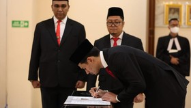

Darurat Timnas Indonesia, Pemain Naturalisasi Disumpah WNI Malam Hari?
CNN IndonesiaRabu, 13 Mar 2024 08:32 WIB
Jakarta, CNN Indonesia -- Langkah-langkah yang ditempuh PSSI dalam proses naturalisasi pemain sepak bola untuk Timnas Indonesia makin anomali.
Terbaru, prosesi sumpah WNI pemain naturalisasi dilangsungkan pada tanggal merah dan malam hari. Adalah Nathan Tjoe-A-On yang menjalani proses anomali tersebut pada Senin (11/3).
Foto Nathan disumpah WNI beredar di media sosial pada Senin (11/3) malam. Namun, PSSI melalui Ketua Umum Erick Thohir baru mengumumkan proses naturalisasi pada Selasa (12/3) siang.
Pria yang menjabat Menteri BUMN itu juga menyebut PSSI tengah mengurus proses perpindahan federasi untuk Nathan sebagai syarat untuk membela skuad Garuda.
"Satu langkah lagi yaitu mengurus perpindahan federasi untuk Nathan bisa membela Timnas Indonesia. Terima kasih atas dukungan semua lembaga yg membantu proses berjalan dengan baik."
"Insya Allah Nathan bisa memperkuat Indonesia saat melawan Vietnam pada 21 Maret mendatang. Bersama-sama kita bawa Garuda Mendunia," terang Erick Thohir.
Sejatinya surat keputusan presiden (Keppres) atas naturalisasi Nathan sudah diteken pada 11 Desember 2023. Keppres Nathan ini bersamaan dengan Keppres atas nama Jay Idzes.